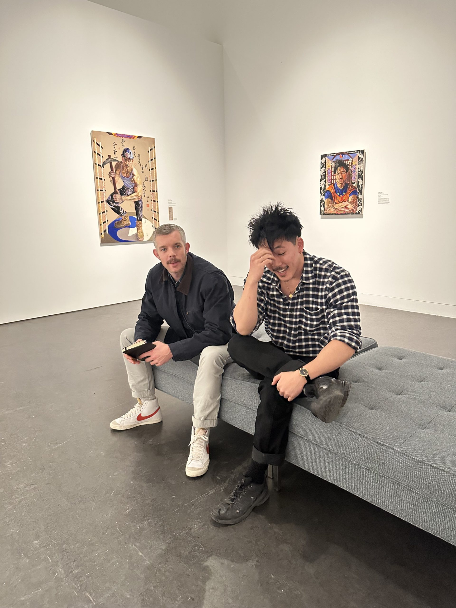

Oscar yi Hou and Russell Tovey on Kinks, Cranes, and Cowboys

“First white boy I’ve painted in a long time,” says Oscar yi Hou, the New York-based British artist, as he and Russell Tovey, the actor and host of the podcast Talk Art, walk through yi Hou’s new exhibition at the Brooklyn Museum, East of Sun, West of Moon. The 24-year-old painter is talking about a tender portrait of his boyfriend included in the exhibition, yi Hou’s first ever solo museum show, which came to fruition after the illustrious painter won the UOVO Prize, earning him a $25,000 unrestricted grant, a 50×50 ft mural on the company’s Bushwick facility, and this exhibition. In the portrait, a handsome white boy wears a cowboy hat and a soft pink shirt, half-buttoned up, his sleeves rolled and his arms crossed, conjuring the burly men of the mythical American West. The idea is a recurring one in yi Hou’s work, which often finds reference and inspiration in the schism between the artist’s Chinese heritage and the American dream, two subjects that came up frequently that morning at the museum, as he and Tovey surveyed the show and reminisced about how they first crossed paths. East of Sun, West of Moon features 11 original portraits by yi Hou of lovers, friends and himself, drawing from the works of Martin Wong, the prolific Chinese-American painter who lived in the Lower East Side and eventually died of complications from AIDS in 1999. “Martin Wong was the OG Gaysian Cowboy,” yi Hou remarked, as he and Tovey, who appears on the new season of American Horror Story: NYC, talked about leather kinks, making a living as an artist, and fucking twinks to death (on television).
TOVEY: Well, we’re in the Brooklyn Museum, and this is your solo exhibition, East of Sun, West of Moon. What does it feel like to have an institutional show in the United States of America, which has always been a destination for you? Since we’ve met, the American dream has always been something you’ve been attached to.
YI HOU: Yeah. It feels really good.
TOVEY: Imagine if you were like, “It’s shit. It’s awful.”
YI HOU: Everyone always asks me how it feels and it’s like, still happening. So I really never know how to answer. I’m always just like, “Yeah, it’s great. It feels good.” I was working on this show for so long that it just feels like a relief that I actually did it and I finished it. I’m sure in like a few months, I’ll have a—
TOVEY: Meltdown.
YI HOU: Yeah, a meltdown.
TOVEY: How did it come about?
YI HOU: Eugenie [Tsai] is the Senior Curator of Contemporary Art. She saw my show at James Fuentes last year and, out of the blue, nominated me for the UOVO prize. So then I had to write a proposal. It’s like a 30-page proposal. It’s basically a thesis. And then I sent it in and I got it, and I was like, “Shit.” And I found out while I was in Miami last year for Art Basel. So that was the cherry on top.
TOVEY: What is UOVO?
YI HOU: They’re an art storage and logistics company. It was like a $25K cash grant, plus the show. And I also did a mural for them.
TOVEY: So they sponsored this show?
YI HOU: They did the mural.
TOVEY: The image you chose for that is connected to both of us, because that work came about because of a show that I curated at Margate, which was based on Manet’s Le Déjeuner sur l’herbe. It was called Breakfast Under The Tree and it was about group figuration. And you made that painting, which is actually the painting we’re looking at as we walk into the exhibition. I placed that work with Joe Mantello, who I’m working with now on American Horror Story with. That painting might not have existed if that exhibition hadn’t existed.